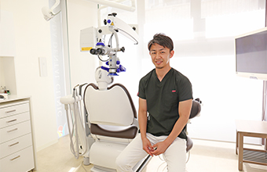
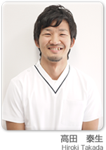
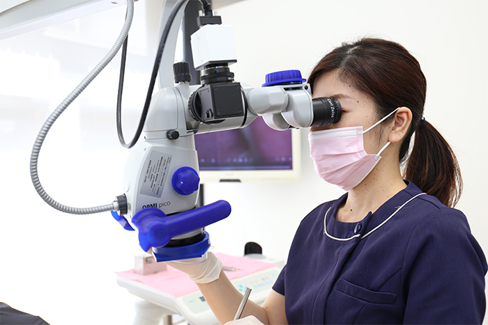

- トップ
- コンセプト・スタッフ紹介
高田歯科クリニックの診療コンセプト&スタッフ紹介
横浜市港北区網島の歯医者「高田歯科クリニック」では、マイクロスコープを使用した精度の高い歯科治療、医学的根拠（エビデンス）に基づいた診療を行っています。こちらでは、当院の診療コンセプトと、診療を担当する院長はじめスタッフをご紹介します。
診療コンセプト
根拠のある治療を、わかりやすく、高品質に
高田歯科クリニックでは、納得と安心のもと患者様に治療を受けていただきたいと考えています。そのためにも、医学的根拠（エビデンス）に裏付けされた治療方法を、わかりやすくご説明し、精度の高い診療をご提供するよう心がけています。
当院では、歯科医師の治療はもとより、歯科衛生士の予防ケアにもマイクロスコープ（手術用顕微鏡）を使用しています。これにより、かつての歯科医療で行われてきたような、歯科医師の勘に頼らざるをえなかった治療も、しっかりと確実に行えるようになり、世界基準の精度の高い治療へ近づけています。
また、患者様へのご説明に時間をしっかりとり、一つひとつの過程を動画や資料を活用してご説明しています。マイクロスコープ（手術用顕微鏡）を通した動画システムを導入していますので、治療中の様子を、その場ですぐに患者様に見ていただくことができます。術前術後の写真や、治療方法の動画をご覧いただくことで、言葉で説明されるよりもわかりやすいと好評です。
スタッフ紹介
院長 高田 勇生
メッセージ

当院は、自身や自身の家族がしてもらいたい治療を行うことをコンセプトとしています。
また診療において大切にしているのは、患者様の目線に立ち、エビデンス（科学的根拠）に基づいたわかりやすい説明をし、患者様一人一人のお口の状態に合わせた質の高い治療を提供することです。より質の高い治療を提供するために、一年に一、二回海外の学会に出席し、世界基準の歯科医療に関する知識・技術を取り入れています。
患者様に「ここに来てよかった」と感じて頂ける歯科医院を目指し、これからも研鑽を積み、邁進していきたいと考えています。
歯のトラブルでお困りの方、なるべく再治療を避けたい方、質の高い歯科治療をご希望の方は、どうぞお気軽に当院へご相談ください。
経歴
鶴見大学歯学部 卒業
伊東歯科口腔病院（熊本） 勤務
高田歯科医院 勤務
高田歯科クリニック 開業
所属学会
臨床応用顕微鏡歯科学会
アメリカ歯周病学会（AAP）
MAK(Modern Ark next Generation)
日本口腔インプラント学会
日本顎咬合学会
海外学会参加履歴
2017年5月
サンディエゴ・アメリカ矯正歯科学会
2017年10月
ボストン・アメリカ歯周病学会
2018年5月
アメリカ矯正歯科学会
2018年10月
バンクーバー・アメリカ歯周病学会
2019年5月
ロサンゼルス・アメリカ矯正歯科学会
2019年6月
ボストン・インターナショナルシンポジウムPRD
歯科医師 高田 泰生
経歴

平成22年 鶴見大学歯学部 卒業
平成23年 上尾中央総合病院(口腔外科)研修を経て
現在、高田歯科医院、高田歯科クリニック勤務
所属学会
臨床応用顕微鏡歯科学会
MAK(Modern Ark next Generation)
日本顎咬合学会
海外学会参加履歴
2019年6月
ボストン・インターナショナルシンポジウムPRD
歯科衛生士・受付スタッフ

衛生士：常勤2名 非常勤2名
助手 ：1名
スタッフ一同、皆様のお越しを心よりお待ちしております。